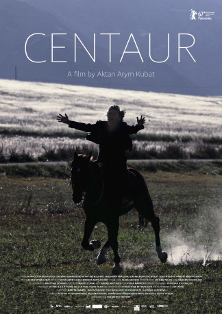

#9369 Die Flügel der Menschen
 
 IMDB-Wertung: 6.6 / 10
IMDB-Wertung: 6.6 / 10  Metascore: 0
Metascore: 0 
Centaur is a quiet, small and modest man, a loving father of a little boy that has never spoken a word and the husband of young, deaf-mute Maripa. Together they lead a simple life in a small village of Kyrgyzstan. Centaur is above all a respected man among his neighbors, a man beyond any suspicion, but he has a belief deeply rooted inside him. He still believes that Kyrgyz people once united and invincible thanks to their horses, have been punished by Heavens for misusing that power to achieve their mercenary goals; Beyond any suspicion, Centaur becomes a horse thief, as he thinks only a genuine racer riding at night and praying for forgiveness can write off the curse. But his well-hidden secret cannot be kept for long. When the truth shines, he will need to decide the destiny of his family, co-villagers and his own.
Jahr: 2017
Dauer: 86 Minuten
FSK: 6
Land: Kirgisistan Studio: Neue Visionen FilmverleihTonspuren:
Untertitel:
Auflösung: SD (720x302) Größe: 851 MB
Genre: Drama
Regisseur: Aktan Arym Kubat
Drehbuch: Ernest Abdyjaparov
Soundtrack: Andre Matthias
Darsteller:
- Nuraly Tursunkojoev als Nurberdi
- Zarema Asanalieva als Maripa
- Aktan Arym Kubat als Centaur
- Taalaikan Abazova als Sharapat
- Ilim Kalmuratov als Sadyr
- Bolot Tentimyshov als Karabay
- Maksat Mamyrkanov als Teit
- Gulmira Tursunbaeva als
- Ulan Omuraliev als
- Cholpon Saitova als
- Erkine Bouljourov als
- Kerim Akmatov als
- Dokhdurbek Kydyraliyev als
- Kanat Mamyrkanov als
- Adyl Bolorbek Uulu als
- Nazym Mendebairov als
- Stanbek Toichubaev als
- Azamat Karagulov als
- Tabyldy Aktanov als Court Chairman
- Meerim Atantaeva als
- Nurbek Bolotov als
- Cholponai Borubaeva als
Datei: X:\2017(A-F)\Flügel der Menschen, Die (2017, FSK6, 720x302).mkv seit 15.08.2018
Festplatte: HD 2017(A-Z)-2018(A-F)
 Es gibt insgesamt 152 Filme in der Gruppe '2017(A-F)'
Es gibt insgesamt 152 Filme in der Gruppe '2017(A-F)'